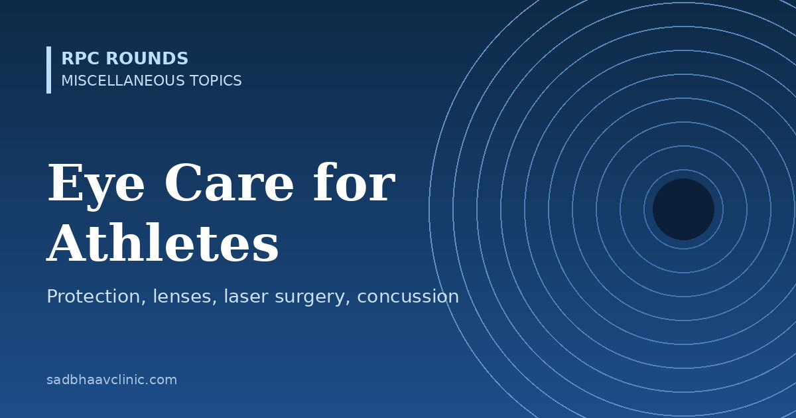

Last updated: November 2026
Key points in 60 seconds
Good vision is part of performance, and the eyes are vulnerable in almost every ball, racquet and contact sport. This guide covers how to protect the eyes, the choice between glasses, contact lenses and laser surgery for athletes, vision after concussion, and when it is safe to return to play after an eye injury or operation.
| Risk level | Examples | Main dangers |
|---|---|---|
| High | Squash, padel, pickleball, badminton, tennis, cricket, baseball and softball, field and ice hockey, lacrosse, basketball, paintball and airsoft, boxing and mixed martial arts | Small fast balls and shuttles, sticks, fingers and elbows, direct punches |
| Moderate | Football (soccer), rugby, volleyball, golf, fishing, water polo | Balls, hooks, collisions |
| Low | Running, cycling (except falls), swimming, gymnastics | Sun, wind, chlorine, falls |
| Very high and protection is limited | Boxing and full-contact martial arts | Repeated blows: retinal tears and detachment, cataract, lens dislocation |
Pickleball and padel
| Option | Good for | Watch out for |
|---|---|---|
| Sports glasses or goggles with prescription lenses | Children, racquet sports, anyone who wants protection and correction together | Fogging, limited side vision, need for a secure strap |
| Daily disposable soft contact lenses | Most field and court sports; wide field of vision, no fogging | Dust and wind; never swim in lenses without tight goggles because of Acanthamoeba infection |
| Orthokeratology (overnight lenses) | Swimmers and water sports, children with myopia | Strict hygiene; infection risk with poor care |
| LASIK | Non-contact sports; quick recovery | The corneal flap can be dislodged by a hard blow even years later; less suited to boxing, martial arts, rugby |
| SMILE | Contact sports; no flap, small incision | Slightly slower visual recovery than LASIK for some; not for all prescriptions |
| PRK or other surface laser | Combat sports, military and police work; no flap | Several days of discomfort and a few weeks for vision to settle |
| Implantable contact lens (ICL) | High myopia or thin corneas | Intraocular surgery; protect the eye after surgery |
See LASIK vs ICL and the LASIK FAQ for more on choosing a procedure.
Up to half or more of people with a sports concussion report visual symptoms: blur, double vision, trouble reading, headache with screen use, light sensitivity or dizziness with movement. Common findings are convergence insufficiency (eyes do not turn in well for near work), reduced focusing (accommodation) and slow or inaccurate eye movements. Sideline and clinic tools such as the King-Devick test and the Vestibular/Ocular Motor Screening (VOMS) help pick these up.
| Injury | What to do |
|---|---|
| Blow from a ball, fist or racquet | Stop play. If vision is blurred, there is blood in the front of the eye (hyphaema), double vision or numbness of the cheek, go to an eye emergency service the same day |
| Cut or something stuck in the eye | Do not press or remove it. Cover with a rigid shield or a paper cup and go to hospital |
| Chemical (pool chemicals, line-marking lime) | Rinse with clean water for at least 15 minutes, then go to hospital |
| Dust or grit | Blink, rinse with saline; do not rub. See a doctor if pain persists after rinsing |
| Flashes, floaters or a curtain after a blow | Same-day retinal examination; these can mean a retinal tear or detachment |
| Situation | Typical advice (always follow your surgeon) |
|---|---|
| Cataract surgery | Light exercise after about 1 week; swimming and contact sports after about 4 weeks |
| LASIK | Non-contact sport after about 1 week; contact sport after about 4 weeks with protective eyewear |
| SMILE or PRK | Light exercise after a few days to 1 week; contact sport after about 4 weeks |
| Retinal detachment surgery with a gas bubble | No flying, mountain travel or diving until the gas has gone; usually no contact sport for 6 to 8 weeks or more |
| Hyphaema | Rest, no sport until cleared by the eye doctor; there is a risk of rebleeding in the first week |
| Orbital fracture | No contact sport for about 6 weeks or as advised by the surgeon |
Sports vision programmes train reaction time, eye tracking, peripheral awareness and hand-eye coordination using light boards, strobe glasses and computer tasks. Athletes improve on the trained tasks; evidence that this carries over into better match performance is still limited, though some studies in baseball and cricket are encouraging. The basics come first: correct even small refractive errors, check eye teaming and focusing, and protect the eyes.
Want to read more? See Dr Dhaval Patel's books on Kindle, available on Amazon worldwide.
📘 Want more exam-ready material? See Most Commons in Ophthalmology on Kindle, or browse all my books.
How to cite this page
Patel D. Eye Care for Athletes: Protective Eyewear, Contact Lenses in Sport, LASIK vs SMILE vs PRK, Concussion and Returning to Play. RPC Rounds (Sadbhaav Eye Clinic). Updated November 2026. Available at: https://www.sadbhaavclinic.com/eye-care-for-athletes-sports-vision.html. Accessed [date].
Looking for an eye specialist in Ahmedabad? Eye Department at Sadbhaav or book a consultation with Dr. Dhaval Patel.